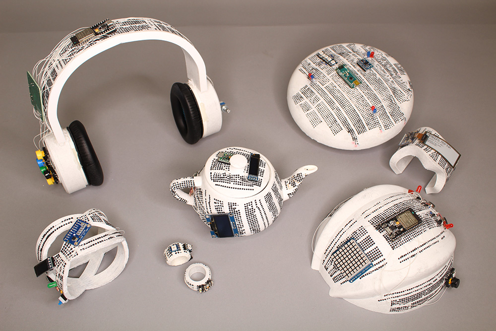
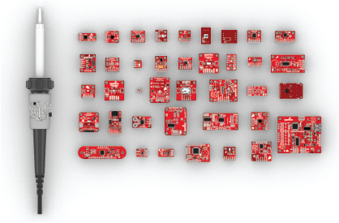
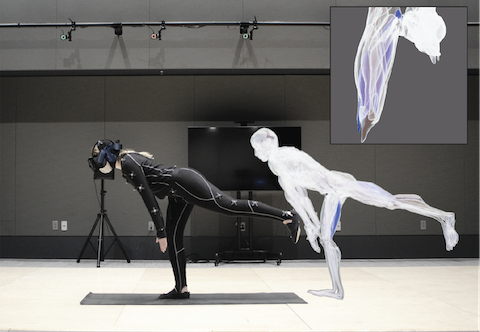

As a Human-Computer Interaction (HCI) lab in the area of manufacturing and design, we develop novel fabrication techniques that combine innovations in hardware, materials, and computational algorithms to create interactions with objects that have not been possible before. Every day we interact with hundreds of objects. What our objects can be used for and how we use them, has a large impact on how we live our everyday lives. Many of the properties of our objects and thus the resulting interactions we have with them are determined by the materials they are made of and the manufacturing techniques used to make them. Our work develops novel fabrication techniques that leverage innovations in hardware, materials, and computational algorithms to give objects capabilities that go beyond the type of interactions that exist today.
Objects with Interactive Appearances
We investigate what interactions become possible when physical objects are able to change their appearance. We develop computational fabrication techniques that create appearance-changing objects using photochromic dyes that can create multi-color textures that are reprogrammable on-demand; high-resolution multi-color 3D printing to fabricate lenticular lenses across an object’s surface to enable viewpoint-based appearance changes; birefringent materials that creates rotation-based appearance changes via polarized light mosaics; and optical illusions to create animated physical photographs.
 Photo-Chromeleon (ACM UIST 2019, Best Paper Award) |
 Lenticular Objects (ACM UIST 2021) |
Polagons (ACM CHI 2023) |
 KineCam (ACM SIGGRAPH 2022 Art Paper) |
Tracking Interactions via Optical Markers
To keep objects passive while still being able to track interactions with them, we explore fabrication techniques that create invisible markers from infrared-translucent filament that can be tracked with IR cameras, create identifiable surface features based on artifacts of slicing and 3D printing that can be tracked with regular cameras, leverage existing surface features of materials via speckle imaging with a lens-less image sensor, or use magnetic pixels that can be read using hall effect sensors and viewed under magnetic viewing film.
 InfraredTags (ACM CHI 2022) |
 G-ID (ACM CHI 2020) |
 SensiCut (ACM UIST 2021) |
 Mixels (ACM UIST 2022) |
Embedding Sensing into Objects
Capturing interactions where they occur on an object can be challenging for curved, deformable, and moving object geometries. We develop fabrication techniques that integrate sensing with moving parts such as mechanisms where sensors and wires can interfere with the object function, deformable objects where sensors are difficult to adhere, and large-scale objects where current sensors are not able to capture the interaction wholistically.
 MechSense (ACM CHI 2023) |
 MetaSense (ACM UIST 2021) |
 Sprayable User Interfaces (ACM CHI 2020) |
 LaserFactory (ACM CHI 2021) |
Prototyping on Curved Surfaces
Prototyping physical user interface is an essential process for product designers to explore new user interface designs. Rapid prototyping of which electronic components to use and where to place them, however, is challenging on curved object geometries. To address this issue, we developed novel types of breadboards that are flexible and curved, new electronic design tools for reforming existing sensor modules, and visualization tools to preview sensor coverage before physically building the prototype.|
FlexBoard (ACM CHI 2023) |
 CurveBoard (ACM CHI 2020) |
 MorphSensor (ACM UIST 2020) |
 SensorViz (ACM DIS 2022) |
Design Practice
 InStitches (ACM CHI 2023) |
 Fabricaide (ACM CHI 2021) |
Prototyping Health Sensing Devices
 EIT-Kit (ACM UIST 2021) |
 MuscleRehab (ACM UIST 2022) |
Since 2017 © MIT CSAIL (HCI Engineering group) [redesign by
moji
].
All Rights Reserved.